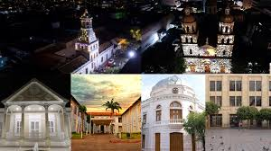

"__"LA BATALLA DE CUCUTA"__"
EL INICIO DE LA LIBERTAD VENEZOLANA
La Batalla de Cúcuta se libró el 28 de febrero de 1813 y fue un enfrentamiento crucial en la lucha por la independencia de Venezuela. Liderada por Simón Bolívar, esta batalla formó parte de la Campaña Admirable, una serie de acciones militares destinadas a liberar Venezuela del dominio español. Bolívar y sus tropas cruzaron los Andes desde Venezuela y atacaron a las fuerzas realistas en Cúcuta, que estaban bajo el mando del coronel Ramón Correa. A pesar de ser una batalla breve, fue decisiva, ya que las fuerzas patriotas lograron una victoria significativa. Esta victoria permitió a Bolívar avanzar hacia el interior de Venezuela, proporcionando un impulso moral y estratégico para la causa independentista. La Batalla de Cúcuta no solo marcó un hito en la independencia de Venezuela, sino que también consolidó la reputación de Bolívar como un líder militar capaz y visionario.
"EPOCA PRECOLOMBINA"
Fundada en 1733, Cúcuta jugó un papel importante en la historia de Colombia.
Fue escenario de la Batalla de Cúcuta en 1819, que marcó la independencia de Colombia de España.
La ciudad también fue un centro importante del comercio y la industria durante el siglo XIX y principios del XX.
"CONQUISTA ESPAÑOLA"
Los primeros europeos en llegar fueron los conquistadores españoles en el siglo XVI, quienes enfrentaron resistencia de los pueblos indígenas.

"DESARROLLO COLONIAL"
Durante el período colonial, Cúcuta se consolidó como un importante asentamiento en el oriente colombiano, recibiendo en 1792 el título de “Muy Noble, Valerosa y Leal Villa” por el rey Carlos IV de España.
"INDEPENDENCIA"
La ciudad fue escenario de la Batalla de Cúcuta en 1813, un evento clave en la lucha por la independencia de Colombia y Venezuela
"SOBRE CUCUTA"
Cúcuta, oficialmente conocida como San José de Cúcuta, es una ciudad con una rica historia que se remonta a la época precolombina. Originalmente, el área estaba habitada por las tribus indígenas Chitareros y Motilones, quienes pertenecían a la familia lingüística Chibcha1.
La ciudad fue fundada el 17 de junio de 1733 por Juana Rangel de Cuéllar bajo el nombre de San José de Guasimales1. Durante la época colonial, Cúcuta se convirtió en un importante centro comercial debido a su ubicación estratégica cerca de la frontera con Venezuela.
Uno de los eventos más significativos en la historia de Cúcuta fue la Batalla de Cúcuta, que tuvo lugar el 28 de febrero de 1813. Esta batalla, liderada por Simón Bolívar, fue crucial para la independencia de la ciudad y marcó el inicio de la Campaña Admirable, que liberó gran parte del occidente de Venezuela3.
Hoy en día, Cúcuta es conocida por su vibrante cultura, su economía dinámica y su papel como un importante punto de conexión entre Colombia y Venezuela
Cúcuta, oficialmente San José de Cúcuta, es una ciudad colombiana ubicada en el departamento de Norte de Santander. Es la capital del departamento y una de las ciudades más importantes de la región. Cúcuta es conocida por su historia rica, su cultura vibrante, su gente amable y sus hermosas montañas. Fundada en 1733, Cúcuta jugó un papel importante en la historia de Colombia. Fue escenario de la Batalla de Cúcuta en 1819, que marcó la independencia de Colombia de España. La ciudad también fue un centro importante del comercio y la industria durante el siglo XIX y principios del XX. Cúcuta es una ciudad con una cultura vibrante, llena de tradiciones, música, danza y gastronomía. Los habitantes de Cúcuta son conocidos por su hospitalidad y su amor por la vida. La ciudad alberga una variedad de eventos culturales a lo largo del año, incluyendo festivales de música, danza, teatro y cine. Cúcuta está rodeada de hermosas montañas, lo que la convierte en un destino ideal para los amantes de la naturaleza. La ciudad también cuenta con varios parques y jardines, donde los visitantes pueden disfrutar de la tranquilidad y la belleza de la naturaleza.
"SOBRE ELLA "
"Historia"
"Cultura"

"Belleza Natural"
"__"EL CERRO TASAJERO"__"

El Cerro Tasajero es una montaña que forma parte de la Cordillera Oriental de los Andes, ubicada al norte del área urbana de Cúcuta, en el departamento de Norte de Santander, Colombia1. Aquí tienes algunos datos interesantes sobre este cerro: Altitud: Aproximadamente 975 metros sobre el nivel del mar. Geología: Presenta un pliegue asimétrico con cabeceo hacia el norte. El núcleo del cerro data del Cretácico, mientras que los flancos son de la edad Terciaria1. Fallas Geológicas: La zona está marcada por varias fallas, siendo la Falla Tasajero la más relevante, con una extensión de 37.5 km. Ecoturismo: Es un destino popular para actividades como campismo y senderismo. Desde la cima, se puede disfrutar de una vista panorámica del valle de Cúcuta y áreas circundantes. Biodiversidad: El cerro alberga un bosque seco tropical con una variedad de flora y fauna, incluyendo roedores, aves, mamíferos, reptiles e insectos.
"HISTORIA"
Época Precolombina: El área estaba habitada por las tribus indígenas Chitareros y Motilones, pertenecientes a la familia lingüística Chibcha1. Fundación: La ciudad fue fundada el 17 de junio de 1733 por Juana Rangel de Cuéllar bajo el nombre de San José de Guasimales1. Desarrollo Colonial: Durante el siglo XVIII, Cúcuta se convirtió en un importante centro comercial debido a su ubicación estratégica cerca de la frontera con Venezuela2. Independencia: La Batalla de Cúcuta, el 28 de febrero de 1813, liderada por Simón Bolívar, fue crucial para la independencia de la ciudad y marcó el inicio de la Campaña Admirable3. Siglo XIX: En 1821, el Congreso de Cúcuta se reunió en el municipio vecino de Villa del Rosario, donde se creó la Gran Colombia1. En 1875, un terremoto devastó la ciudad, pero la reconstrucción llevó a un renacimiento económico y social2. Siglo XX: Cúcuta se convirtió en un importante centro comercial y de transporte, siendo sede del primer ferrocarril del país, el Ferrocarril del Catatumbo2. Actualidad: Hoy en día, Cúcuta es conocida por su vibrante cultura, su economía dinámica y su papel como un importante punto de conexión entre Colombia y Venezuela